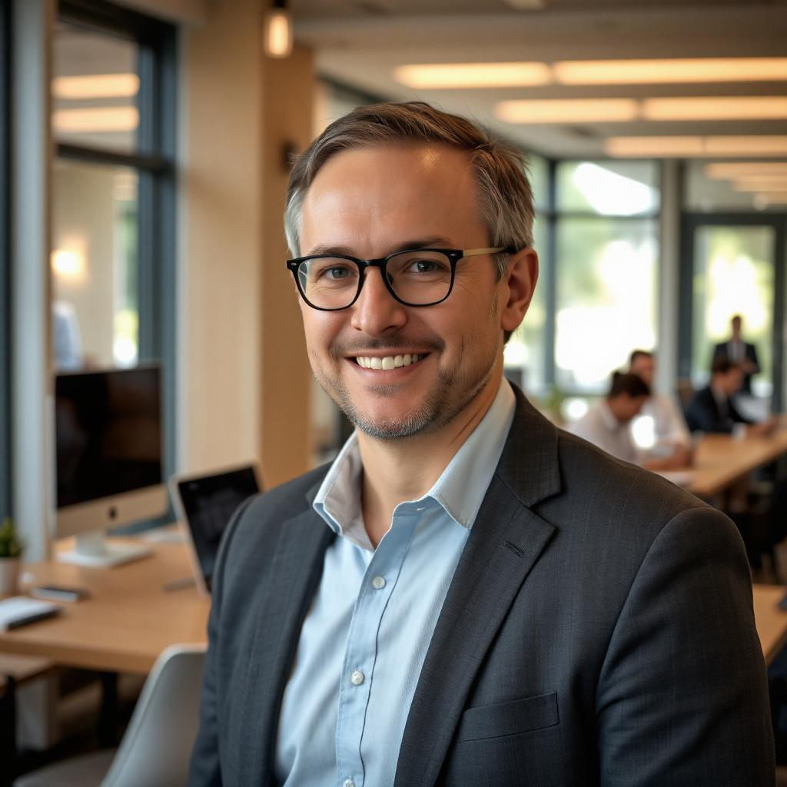
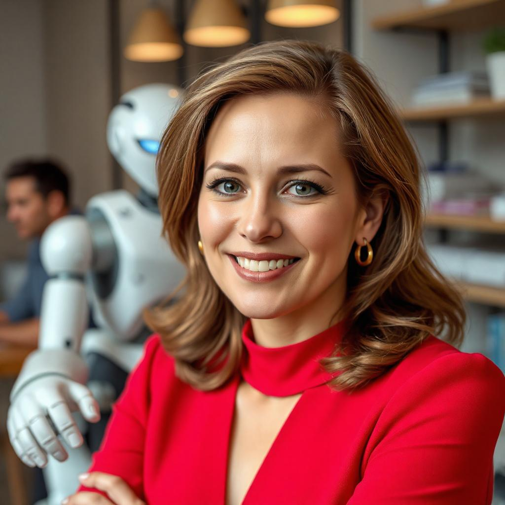

History of TechCon
TechCon was founded in 2022 with the goal of bringing together industry leaders, innovators, and professionals to explore cutting-edge technology trends. Over the years, it has grown into one of the largest and most anticipated tech conferences globally.

Our Mission
At TechCon 2024, our mission is to empower the global tech community by providing a platform for knowledge sharing, networking, and innovation. We aim to inspire the next generation of technology leaders and innovators.

Notable Past Speakers
Throughout the years, TechCon has hosted many influential figures in the tech industry. Below are a few of our esteemed past speakers:
Speaker 1: Alex Carter
Alex Carter is the Chief Technology Officer (CTO) of Innovatech Solutions, a leading tech company specializing in artificial intelligence and cloud computing. With over 20 years in the tech industry, Alex has been instrumental in driving advancements in AI research and its practical applications in everyday business. His passion for creating innovative solutions has helped shape the future of technology integration across industries.

Speaker 2: Maria Thompson
Maria Thompson is a visionary leader and the CEO of NextGen Robotics, a company at the forefront of automation and robotics technology. Under her leadership, NextGen Robotics has developed cutting-edge robots for industries like manufacturing, healthcare, and logistics. Maya is passionate about empowering the next generation of engineers and tech entrepreneurs, especially women, to pursue careers in robotics and STEM fields.

Speaker 3: Jordan Smith
Jordan Smith is the co-founder and Chief Product Officer of CloudNext Technologies, a company revolutionizing cloud security and data privacy solutions. With a background in cybersecurity and software engineering, Jordan has led the development of secure cloud infrastructure that ensures businesses can safely manage and protect their data in the digital age. Jordan is committed to making cybersecurity more accessible and user-friendly for both small startups and large enterprises.